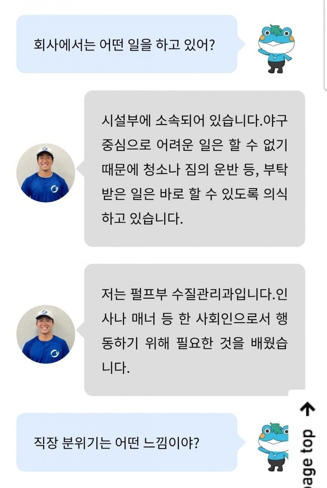

노시환 몸값들으면 기절할듯 ㄷㄷ

노시환 몸값들으면 기절할듯 ㄷㄷ
한국 와라 잘해줄게
찾았다 27시즌 아시아쿼터
쟤는 npb 1라운더 예상이라 아쿼따위는 거들떠도안봄ㅋㅋ
쟤 좀 특이 이력인게 대학4학년때 에이스급이라가을에 평자1위,탈삼진1위찍었는데도 본인이 드래프트신청안하고 사회인야구가서 기량더 안정화시켜서 프로도전하는케이스임
이번에 한국 에이스타자들 개바른걸로 npb 입성은 확정됐고 누가데려가냐 문제일거같은데
솔직히 이력떼고 실력적으로 150좌완에 변화구까지 제구되는거보면 탈사회인을넘어 이미 프로에서도 수준급 레벨인듯
새벽늦게까지 술퍼먹고 오전 내 자다가 오후에 기어나와서
설렁설렁 경기준비하면서 몇억 받는 프로선수가 있다고 하면
억울할듯
듣는 순간 나도 급 억울해졋다 인 생
시발ㅋㅋ 사회인으로서 행동하기 위해 필요한것을 배운대.. 우리나라 프로한테 없는거잖아 ㅠㅠ
그 일본고교야구 게임 생각나네 졸업할때 직업나오는데 에이스가 편의점 서점 직장인 이런거보고
왜 프로 안하나 했는데 고증이였노
일본 고등학교의 75~80%가 야구부가 있다고 함 한국은 4%정도 풀 자체가 다름
우리나라 야구부 약 100개
일본 고교야구부 약 3500~4000개정도
오우..많네
그냥 연봉 뺏어버리고 쟤네 데려오면 안됨?
됨 니가 크보팀 기업 회장겸 크보 총재해서 하면 됨
시민구단아니고서야 알빠아니라생각함
프로리그가 실력에따라 돈버는게 아니니까
그리고 야구풀 존나작음 ㅋㅋ 애초에 풀이작은데 잘하는애가나올수가있나
병신야구 ㅋㅋ
야구 경기란 게 워낙 선발투수 역량에 달렸고 일본이 실업팀 선수들도 프로 지망하던 선수들이라 꽤 잘하고 단기전이니까 질 수도 있는데
이렇게 9회 내내 제대로 된 찬스도 못 만들고 무력하게 진 건 진짜 참사급인 거 같음
전에는 적어도 타격전하면서 어어 하다가 지지 않았나
원래 국내야구는 좆밥수준이라서 ㅋㅋㅋ 국내한정 거들먹거리기 원탑 ㅋㅋ
역시 레저 스포츠 ㅋㅋㅋㅋㅋㅋㅋㅋㅋ
야구는 앞으로 운동선수들 나오는 예능에 나와서
힘들다고 징징대지 마라
야구선수들 쩜오 오지게 처 오던데 일본직장인들한테 쳐발리는 실력으로 그돈받고 그지랄하고 다녔던거냐
어떻게 1점도 못낼수가 있어요